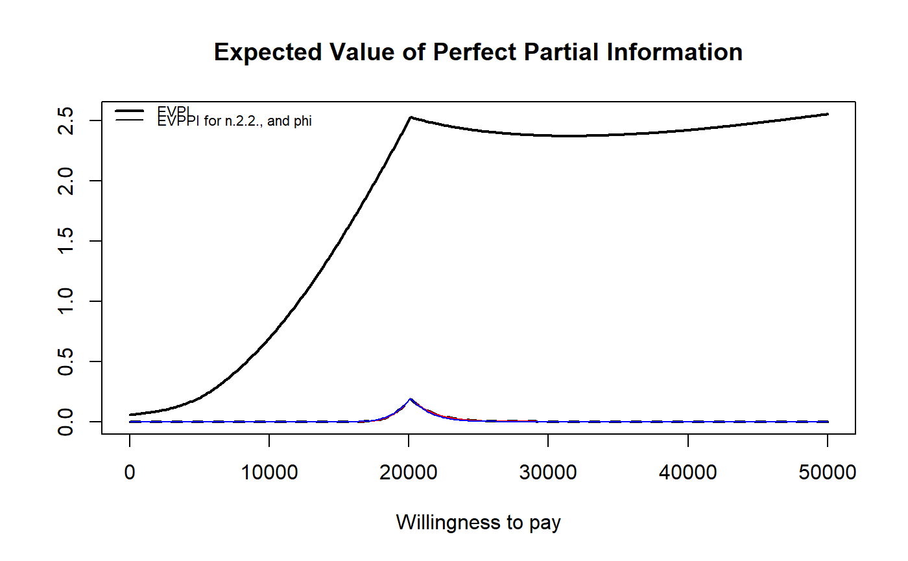
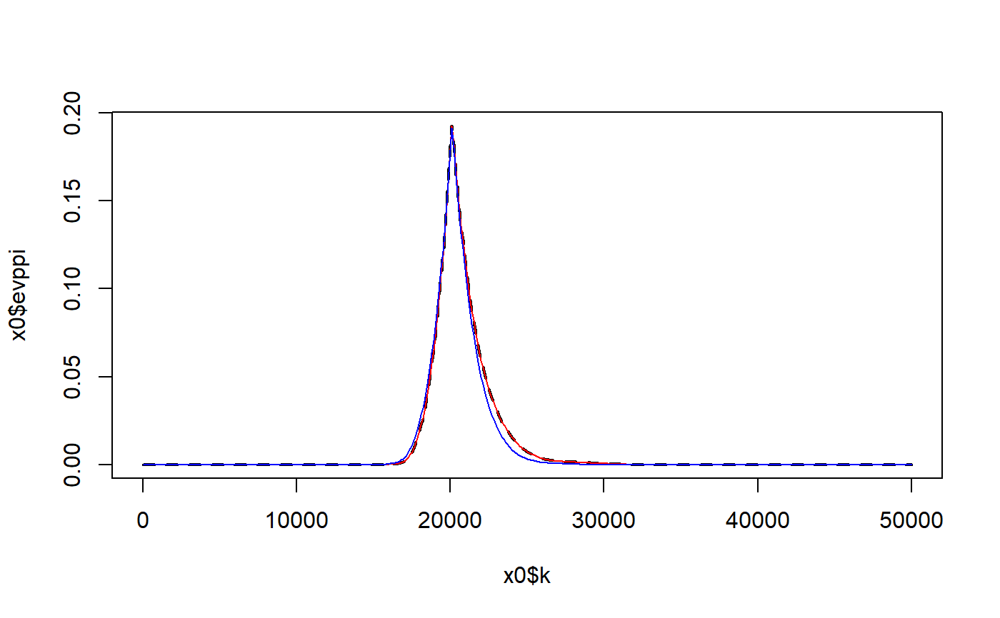

R/evppi.R, R/evppi.default.R
evppi.RdCalculates the Expected Value of Perfect Partial Information (EVPPI) for subsets of parameters. Uses GAM non-parametric regression for single parameter EVPPI and the SPDE-INLA method for larger parameter subsets.
evppi(he, param_idx, input, N = NULL, plot = FALSE, residuals = TRUE, ...) # S3 method for default evppi(he, ...)
| he | A |
|---|---|
| param_idx | A vector of parameters for which the EVPPI should be calculated. This can be given as a string (or vector of strings) of names or a numeric vector, corresponding to the column numbers of important parameters. |
| input | A matrix containing the simulations for all the parameters monitored by the call to JAGS or BUGS. The matrix should have column names matching the names of the parameters and the values in the vector parameter should match at least one of those values. |
| N | The number of PSA simulations used to calculate the EVPPI. The default uses all the available samples. |
| plot | A logical value indicating whether the triangular mesh for SPDE-INLA should be plotted. Default set to `FALSE`. |
| residuals | A logical value indicating whether the fitted values for the SPDE-INLA method should be outputted. Default set to `TRUE`. |
| ... | Additional arguments. The default methods to compute the EVPPI
are:
- For single-parameter:
GAM regression.
- For multi-parameter:
INLA/SPDE. However, it is possible (mainly for backward compatibility) to
use different methods. For single-parameter, the user can specify the method
of Sadatsafavi et al or the method of Strong & Oakley. In order to do so, it
is necessary to include the extra parameter |
The computed values of evppi for all values of the parameter of willingness to pay.
A numerical vector with the index associated with the parameters for which the EVPPI was calculated.
The vector of values for the willingness to pay.
The vector of values for the overall EVPPI.
The fitted values for the costs.
The fitted values for the effects.
A single string containing the names of the parameters for which the EVPPI was calculated, used for plotting the EVPPI.
Computational time (in seconds).
The object produced by the model fit for the costs.
The object produced by the model fit for the effects.
The formula used to fit the model.
A string indicating the method used to estimate the EVPPI.
The single parameter EVPPI has been calculated using the non-parametric GAM regression developed by Strong et al. (2014). The multi-parameter EVPPI is calculated using the SPDE-INLA regression method for Gaussian Process regression developed by Heath et al. (2015).
For multi-parameter, the user can select 3 possible methods. If
method = "GAM" (BCEA will accept also "gam", "G" or
"g"), then the computations are based on GAM regression. The user can
also specify the formula for the regression. The default option is to use a
tensor product (e.g. if there are two main parameters, p1 and
p2, this amounts to setting formula = "te(p1,p2)", which
indicates that the two parameters interact). Alternatively, it is possible
to specify a model in which the parameters are independent using the
notation formula = "s(p1) + s(p2)". This may lead to worse accuracy in
the estimates.
This is used if method="GP" (BCEA will also accept the specification
method="gp"). In this case, the user can also specify the number of
PSA runs that should be used to estimate the hyperparameters of the model
(e.g. n.sim=100). This value is set by default to 500.
These are all rather technical and are described in detail in Baio et al. (2017).
The optional parameter vector int.ord can take integer values (c(1,1) is
default) and will force the predictor to include interactions: if
int.ord = c(k, h), then all k-way interactions will be used for the
effects and all h-way interactions will be used for the costs. Also, the
user can specify the feature of the mesh for the "spatial" part of the
model. The optional parameter cutoff (default 0.3) controls the
density of the points inside the mesh. Acceptable values are typically in
the interval (0.1, 0.5), with lower values implying more points (and thus
better approximation and greater computational time). The construction of the
boundaries for the mesh can be controlled by the optional inputs
convex.inner (default = -0.4) and convex.outer (default =
-0.7). These should be negative values and can be decreased (say to -0.7 and
-1, respectively) to increase the distance between the points and the outer
boundary, which also increases precision and computational time. The
optional argumentrobust can be set to TRUE, in which case INLA will
use a t prior distribution for the coefficients of the linear predictor.
Finally, the user can control the accuracy of the INLA grid-search for the
estimation of the hyperparameters. This is done by setting a value
h.value (default = 0.00005). Lower values imply a more refined search
(and hence better accuracy), at the expense of computational speed. The
method argument can also be given as a list allowing different regression
methods for the effects and costs, and the different incremental decisions.
The first list element should contain a vector of methods for the
incremental effects and the second for the costs, for example
method = list(c("GAM"), c("INLA")). The int.ord argument can also
be given as a list to give different interaction levels for each regression
curve.
By default, when no method is specified by the user, evppi will
use GAM if the number of parameters is <5 and INLA otherwise.
Strong M., Oakley J. and Brennan A. (2014). Estimating multi-parameter partial Expected Value of Perfect Information from a probabilistic sensitivity analysis sample: a non-parametric regression approach. Medical Decision Making.
Sadatsafavi M., Bansback N., Zafari Z., Najafzadeh M., Marra C. (2013). Need for speed: an efficient algorithm for calculation of single-parameter expected value of partial perfect information. Value in Health.
Baio G. (2012). Bayesian Methods in Health Economics. CRC/Chapman Hall, London.
Baio, G, A Berardi, and A Heath. 2017. Bayesian Cost-Effectiveness Analysis with the R package BCEA. New York, NY: Springer. doi:10.1007/978-3-319-55718-2.
Heath A., Manolopoulou I., Baio G. (2016). Estimating the Expected Value of Partial Perfect Information in Health Economic Evaluations using Integrated Nested Laplace Approximation. Statistics in Medicine. http://onlinelibrary.wiley.com/doi/10.1002/sim.6983/full
Anna Heath, Gianluca Baio
# See Baio G., Dawid A.P. (2011) for a detailed description of the # Bayesian model and economic problem # Load the processed results of the MCMC simulation model data(Vaccine) # Run the health economic evaluation using BCEA m <- bcea(e, c, ref = 2, interventions = treats) # Compute the EVPPI for a bunch of parameters inp <- createInputs(vaccine)#> [1] 14 15 16 17 18 19 20 21 22 29 44 45 46 47 #> [1] "Linear dependence: removing column pi[2,2]" #> [1] 14 15 16 17 18 19 20 21 22 29 44 45 #> [1] "Linear dependence: removing column pi[2,1]" #> [1] 14 15 16 17 18 19 20 21 22 29 44 #> [1] "Linear dependence: removing column pi[1,1]" #> [1] 14 15 16 17 18 19 20 21 22 #> [1] "Linear dependence: removing column Repeat.GP[2,2]" #> [1] 14 15 17 18 20 21 #> [1] "Linear dependence: removing column Repeat.GP[2,1]" #> [1] 14 17 20 #> [1] "Linear dependence: removing column Repeat.GP[1,1]"# Compute the EVPPI using INLA/SPDE x0 <- evppi(he = m, param_idx = 39:40, input = inp$mat)#> [1] "method: GAM" "method: GAM" #> #> Calculating fitted values for the GAM regression #> #> Calculating fitted values for the GAM regression #> Calculating EVPPI# using GAM regression x1 <- evppi(he = m, param_idx = 39:40, input = inp$mat, method = "GAM")#> #> Calculating fitted values for the GAM regression #> #> Calculating fitted values for the GAM regression #> Calculating EVPPI# using GP regression x2 <- evppi(he = m, param_idx = 39:40, input = inp$mat, method = "GP")#> #> Calculating fitted values for the GP regression #> #> Calculating fitted values for the GP regression #> Calculating EVPPI#>